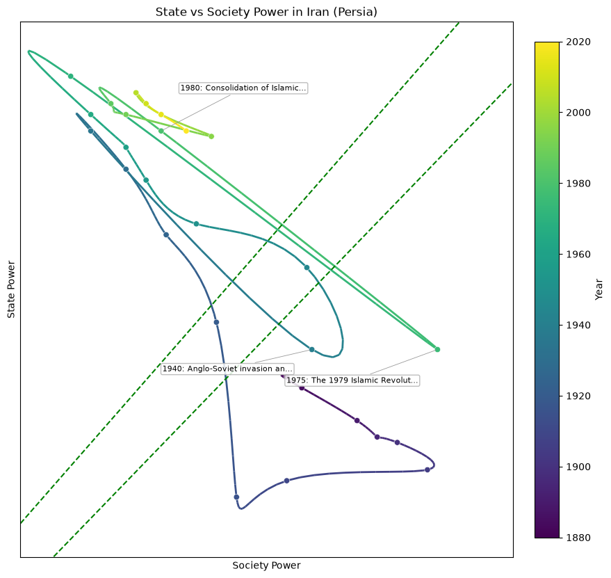
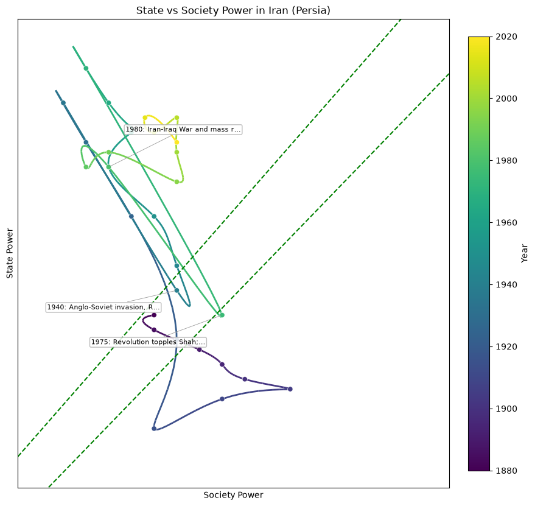
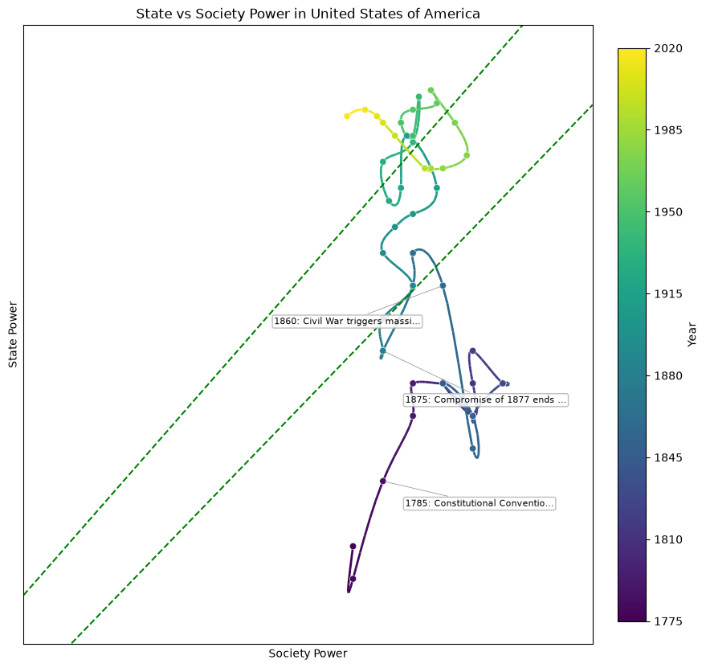

Iran (Persia)

▶ animate
▶ animateUnited States of America

▶ animateState vs. society power paths, scored by LLMs. 3 panels · 2 countries.
Method & code: GitHub repository. Click any plot to play its animation.

▶ animate
▶ animate
▶ animate